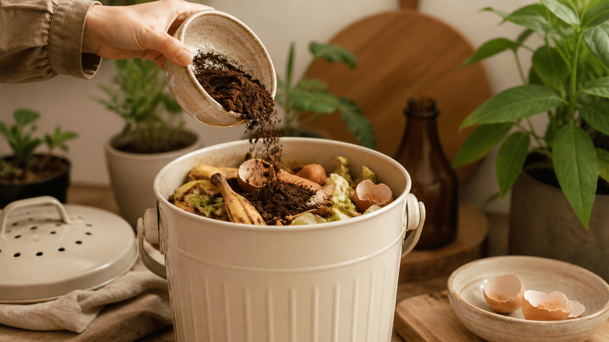
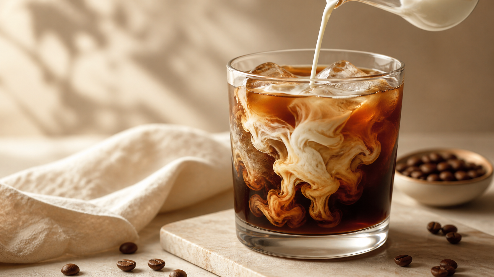

Recepty
Jak si doma připravit skvělé espresso
Tlak, teplota, mletí a trocha trpělivosti. Čtyři věci, které rozhodují o výsledku v šálku.
Blog
Recepty, tipy a příběhy z kavárny i ze světa výběrové kávy. Píšeme o tom, co sami připravujeme, ochutnáváme a máme rádi.
Všechny články
Recepty
Tlak, teplota, mletí a trocha trpělivosti. Čtyři věci, které rozhodují o výsledku v šálku.

Origins
Jasná ovocnost, květinové tóny a terroir Yirgacheffe, díky kterému patří etiopské kávy mezi světovou špičku.

Tipy
Hrubost mletí dokáže změnit chuť víc, než se zdá. Ukážeme vám, kde začít a čeho se vyvarovat.

Nápoje
Oba nápoje stojí na espressu a mléce, ale chutnají jinak. Rozhoduje poměr, textura mléka, velikost šálku i výsledný pocit v ústech.

Udržitelnost
Kompostujeme, zkoušíme pěstování hub a část sedliny nabízíme zákazníkům zdarma. Protože i to, co vypadá jako odpad, může mít další využití.

Recepty
Osvěžující káva bez složitého vybavení. Stačí hrubě mletá káva, studená voda, čas a pár minut přípravy večer předem.